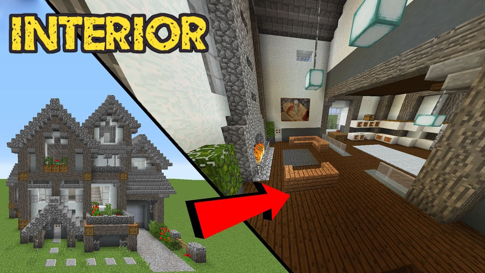

90
LUMINA EULUI INTERIOR

skip to main | skip to sidebar LUMINA EULUI INTERIOR
Pages
Pagina de pornire CAMERELE CREATIEI MEDITATIE VINDECARE SCHIMB DE LINKluni, octombrie 30, 2017
Rugaciunea broastei
Postat Maria Într-o noapte, pe când se ruga, fratele Bruno a fost tulburat de orăcăitul unui broscoi. Încercările lui de a ignora sunetele dizgraţioase s-au dovedit inutile, aşa că, exasperat, a sfârşit prin a striga pe fereastră:Tăcere! Îmi fac rugăciunile!
Fratele Bruno era un sfânt, aşa că porunca lui a fost imediat ascultată. Toate creaturile vii din preajmă au tăcut, pentru ca sfântul să se poată ruga în pace.
În mintea lui Bruno a apărut însă o îndoială, care i s-a părut chiar mai tulburătoare:
Dacă Dumnezeu ascultă cu aceeaşi plăcere orăcăitul broaştei ca şi psalmii tăi?
Ce plăcere i-ar putea face lui Dumnezeu orăcăitul unei broaşte? nu s-a lăsat mai prejos Bruno.
Dar vocea interioară a insistat:
De ce crezi că a inventat Dumnezeu sunetul?
Bruno nu ştia, aşa că s-a decis să afle de ce. El a ieşit la fereastră şi a strigat:
Cântă!
Orăcăitul broscoiului s-a auzit imediat, însoţit cu veselie de toate broaştele din vecinătate. Bruno a ascultat cu atenţie zgomotele şi şi-a dat seama că dacă nu le mai opune rezistenţă, ele nu mai sunt supărătoare, ci dimpotrivă, îmbogăţesc tăcerea nopţii.
Odată cu această descoperire, inima lui Bruno a intrat în armonie cu universul şi pentru prima oară în viaţă, el a înţeles ce înseamnă să te rogi cu adevărat. la 30.10.17 7 comentarii Etichete: Diverse
sâmbătă, octombrie 28, 2017
Venim pe această lume să experimentăm la nivel individual, să fim unici
Postat MariaVenim pe această lume să experimentăm la nivel individual, să fim unici, să reducem toate posibilitățile la una singură. În corpul fizic, infinitul devine 1. Poate cea mai grea lecție pentru noi ca indivizi este să facem alegeri și să luăm decizii. Din alegerile multiple pe care le putem face în orice clipă avem de învățat să rămânem la una singură, iar odată luată decizia, să ne-o asumăm definitiv. Numai când alegerea respectă principiul numărului 1 suntem în acord cu Divinitatea, respectăm legile Universului, căci 1 este numărul lui Dumnezeu, din care decurg toate celelalte numere și puterile lor, deci tot ceea ce există.
Fiecare dintre noi are calea lui, care este de asemenea unică. Una singură. Pe calea noastră, cel mai important este să cerem și să păstrăm numai ceea ce este al nostru. Iată din nou exclusivitatea ca forță! Nu putem păstra mult timp ce nu ne aparține. În funcție de alegerile pe care le facem însă, dacă intrăm pe teritoriul altcuiva și trăim prea mult în dualitate, calea noastră începe să ocolească și ajungem să pierdem chiar și ce era al nostru până atunci. Dumnezeu redistribuie întotdeauna ceea ce este al nostru dar nu folosim. Simplu, îi găsește alt loc, îl ia și-l dă altuia.
Cât timp ne păstrăm în legea lui 1, în alegerile ferme, în deciziile asumate față de noi înșine și față de ceilalți, în exclusivitate, în integritate, toată puterea este la noi. Cu prima minciună față de noi înșine și față de alții intrăm în dualitate, sufletul ni se împrăștie, ieșind de pe drumul nostru. Unde ajungem? Pe drumul altuia! Ajungem să trăim viața altcuiva.
Cel mai evident transfer de putere se face la nivelul energiei sexuale. Sexul este cea mai mare putere din Univers, forța creatoare, prin care masculinul se unește cu femininul. Sexualitatea manifestată în iubire într-un cuplu asumat îl coboară pe Dumnezeu pe Pământ.
Ce se întâmplă când, în afara cuplului, unul dintre parteneri întreține relații sexuale cu altcineva? Sexul este desprins, în primul rând, de iubire și devine o manifestare a puterii. Partenerul care înșală face ceva pe ascuns, la adăpstul întunericului, deci scoate Lumina din cuplu, intrând într-un joc de putere pe care-l joacă cu ambii parteneri. Este evident că la mijloc există o neasumare, o lipsă de poziționare clară. Cel ce înșală pune în scenă un comportament evitant, deci fuge de asumarea unei decizii ferme. El/ea nu se confruntă cu alegerea, ajungând să fie prins/ă între două planuri. Din unicitate, plonjează în dualitate, separând sufletul de trup și ajungând să-și scadă puterea.
Ce nu stăpânești, te stăpânește. Atunci când cineva are de ales între doi parteneri de care se leagă sexual (să nu amintim cazurile în care vorbim de cel puțin doi parteneri), deja persoana cedează altcuiva puterea asupra sa. Altcineva e stăpân pe el/ea, de fapt ambii parteneri au drepturi asupra lui/ei. În relația paralelă în care nu dragostea este liantul, infidelul/infidela se conectează la toată Umbra partenerului, care ajunge să-l domine până la obsesie. Valeriu Panoiu la 28.10.17 5 comentarii Etichete: Diverse
joi, octombrie 26, 2017
Fiind nimic, am început să intuiesc faptul că pot fi totul
Postat Maria Într-o dimineață-sunt deja mulți ani de-atunci, mi-am dat seama stupefiat că habar n-aveam cine sunt. Nici măcar ce sunt. Toate rolurile pe care le jucam fuseseră suspendate, toate vocile interioare pe care le considerasem ca fiind eu însumi, tăcuseră, toate personajele cu care mă identificaseră se evaporaseră, iar eu rămăsesem gol pe dinlăuntru, nelocuit de nici o voce, într-o tăcere interioară aiuritoare. Jurnalistul și omul de televiziune, tatăl și aventurierul, investigatorul și analistul, reporterul neliniștit din mine, toți dispăruseră. A fost mai întâi un moment de crispare, poate că a fost acolo și puțină frică, poate că ar trebui să consult un doctor, un psihiatru, ceva, îmi spuneam, căci nimic nu mai părea în regulă. Dar până la urmă frumusețea și noutatea absolută a acelei stări a învins.In dimineata aceea am stiut că nimic nu va mai fi cum a fost. Trecusem, cu o zi inainte, printr-o încercare despre care poate ca voi povesti în scris cândva. O cumpănă între viață și moarte. Cineva mă chemase pe tărâmurile inefabile pentru a-mi arăta că mă rătăcisem. Iar acum priveam prin fereastra de la ultimul etaj al unei elegante rezerve de spital. Lumina dimineții avea greutatea și culoarea mierii. Mă odihneam, fără nici un cuvânt, într-un peisaj interior complet gol. Eram nimeni. Istoria mea personală, aceea în care devenisem un jurnalist implicat complet în trasformările lumii exterioare, se dizolvase. Poveștile pe care mi le spusesem despre mine însumi se vedeau acum drept ceea ce erau: simple povești. Crezusem că am cunoscut succesul de toate felurile, crezusem că am trăit iubirea, cezusem că am fost tot ceea ce putusem fi și fusesem mulțumit cu viața mea. Iar acum, în această dimineață tăcută înțelegeam că Eu nu eram toate acele personaje pe care le jucasem cu convingere, că ceea ce Eu eram cu adevărat era doar Povestitorul acelor istorii.
Așa am devenit, pentru un timp, Nimeni și Nimic. Am plutit. Am renuntat la toată viața mea anterioară. Simțeam că pentru a deschide porți noi trebuia să le închid pe cele vechi. Mi-a fost frică și mi-am făcut curaj, apoi am fugit și m-am întors, am ezitat și am plâns, dar înapoi nu m-am mai întors. Unele porți, deschise cu foarte mulți ani în urmă s-au lăsat închise foarte greu. Convențiile și compromisurile în care trăisem s-au prăbușit. Descopeream că aproape întreaga mea viață de până atunci fusese la limita convenției și a compromisului. Am lăsat totul în urmă.
Doar așa am putut descoperi Adevărul despre mine. Fiind nimic, am început să intuiesc faptul că pot fi totul. Aceasta nu este o metaforă, ci unul dintre cele mai profunde adevăruri ale mele. L-am descoperit în mine pe cel pe care eu îl numesc Marele Jucător. El nu poartă un nume, dar dacă ar trebui să poarte unul atunci ar fi cel al Conștiinței însăși. Este Experimentatorul, este Martorul, este Cel Care Este.
Mai târziu am descoperit că totul se petrecuse cu perfecțiune, orchestrat impecabil de acest Experimentator genial din interiorul meu care nu făcea altceva decât să se descopere pe sine.
Adevărul vine înaintea Iubirii, a rostit cineva, iar eu am încremenit recunoscând puterea acestei afirmații. Nici eu nu putusem trai Iubirea câtă vreme nu întrezărisem Adevărul despre mine însumi, căci nu există Iubire înafara Adevărului. Oferindu-mi Adevărul, mi-am deschis porțile Iubirii.
Cea mai tulburătoare, cea mai magică, cea mai nebunească poveste de iubire pe care o cunosc sau despre care am auzit vreodată, este propria mea poveste de iubire cu Elena. Sunt unul dintre norocoșii acestei lumi care trăiește Iubirea aceea despre care scriu poeții și despre care crezusem întotdeauna că nu este decât o metaforă. Trăiesc, de 7 ani, cea mai transformatoare poveste de iubire, o iubire care m-a condus către mine însumi într-un mod uluitor, care mi-a deschis porțile către percepția conștientă a naturii spirituale a Universului. Iubirea a rupt zidurile interioare clădite în mii de vieți de luptă și de prudență, iubirea a spulberat credințele despre ceea ce sunt, iubirea m-a făcut să ies din structurile de oțel inoxidabil ale minții mele, să uit prejudecățile și fricile, să mă arunc marea de energie a Creației dezbrăcat de toate armurile pe care le credeam necesare supraviețuirii. Iubirea a deschis pentru mine porțile marii Conștiințe, ale amintirilor vechi cât toată isotria Universului și m-a făcut să văd că eu sunt mai mult decât atât. Iubirea totală pentru ea m-a făcut să văd adevărata natură a Umanității, începând cu mine însumi și terminând cu celelalte ființe, de orice natură ar fi ele, am descoperit, poate pentru prima dată în lunga poveste a sufletului meu, ce înseamnă compasiunea, înțelegerea profundă a ceea ce suntem, a faptului că nimeni nu este de vină cu nimic, că suntem cu toții într-o extraodinară aventură a descoperirii de sine și că realitatea este expresia completă a ceea ce suntem în profunzimile noastre cele mai adânci.
Vă întrebați poate ce legătură are asta cu stările de conștință extinsă și cu spiritualitatea, cu căutarea de Sine și cu regăsirea de Sine Ei bine, Iubirea constituie o uriașă expansiune a conștiinței, de fapt o regăsire a adevăratelor dimensiuni ale Conștiinței pentru că presupune abandonarea tuturor structurilor create de mintea noastră pentru a putea supraviețui în mediul dens al încarnării. Îndrăgostit fiind, nu-ți mai pasă de nici una dintre toate armurile, nu mai este nevoie de ele, nu te mai temi să fii vulnerabil și astfel devii invincibil, acea plutire, acea scurgere difuză a ființei atunci când ești îndrăgostit, acea supra-sensibilitate față de tot ceea ce există nu este altceva decât adevărata noastră natură de ființe inefabile și curajoase care au ales experiența densității pentru a se auto-experimenta, pentru a expansiona, pentru a scormoni în oceanul de posibilități ascunse în interiorul nostru divin. Iubirea între un bărbat și o femeie este o experiență mistică totală pentru că presupune nu abandonarea de Sine, ci abandonarea iluziei despre Sine și descoperirea Sinelui. Este o experiență mistică pentru că descoperă uluitoarele comuniuni între suflete, pentru că desființează granițele pe care ni le-am inventat pentru a ne ”proteja” de ceilalți, pentru că dezvăluie frumusețea divină a propriei Ființe, puterea uriașă care se ascunde în a fi vulnerabil, pentru că deschide porțile iubirii de sine și ale respectului pentru ceea ce suntem, pentru că revelează minunăția Creației. Dansul Iubirii adevărate între un bărbat și o femeie nu este doar unul care se petrece în densitatea încarnării, în materie, ci este un dans cosmic, la mii de niveluri ale simțirii și ale energiei, ale emoției și ale înțelegerii, este o redescoperire a faptului că suntem fără granițe, iar deschiderea interioară fără de care nu este posibilă Iubirea, este procesul cel mai complet vindecător pe care îl cunosc. Toți am auzit că Iubirea vindecă, dar câți dintre noi am avut curajul să ne lăsăm vindecați prin Iubire?
Eu Sunt cel care trăiește toate acestea. Am păstrat unele dintre rolurile mele anterioare, dar sunt conștient de faptul că nu mă pot defini prin ele. Astfel, uneori sunt jurnalist, căci scriu reportaje în felul meu, alteori sunt un investigator al Conștiinței și reportajele mele sunt despre partea nevăzută a acestei lumi, alteori sunt cel care împărtășește căutătorilor de sine hărțile Conștiinței. Am experimentat de multe ori expansiunea și am învățat câte ceva despre nisipurile mișcătoare ale acestor teritorii interioare. Rolul pe care mi-l asum cel mai des în ultimul timp este acela de însoțitor, de ghid pentru aceia care simt chemarea Ființei și care au nevoie să știe că au mai trecut și alții prin acest proces. Deasemeni, uneori sunt acela care transferă în limbaj liniar, accesibil, înțelesurile, căile și semnificațiile acestor călătorii interioare.
Sunt unul dintre aceia are și-au găsit sufletul și care au recuperat o parte din ceea ce sunt cu adevărat. Sunt unul dintre aceia care cred că Dumnezeu poate fi trăit în orice clipă și că poarta este lăuntrică. Cred cu tărie că nu există altă cale pentru noi, decât aceea a scufundării în interior, a încrederii în noi înșine, a Iubirii pentru noi înșine și pentru alții. Dacă El este omniprezent, atunci este în noi și noi suntem în El. Este un alt fel de a vorbi despre divinitatea noastră. Cred cu adevărat în Calea Maestrului Interior, acel cuprinzător nivel de Conștiință care este răspunsul la toate întrebările noastre și în plus, că avem norocul să trăim marea schimbare despre care vorbeau iluminații. Cred că a venit timpul nu numai să vorbim despre toate acestea, ci să le și trăim, căci singura cunoaștere reală este cea care vine din experimentare directă. (2009) Horia Turcanu
la 26.10.17 3 comentarii Etichete: Diverse
marți, octombrie 24, 2017
In dualitate
Postat Maria Suntem in dualitate. Adica in acest vis in care totul are opus. Bun-rau,frumos-urat,lumina-intuneric,credincios-necredincios,imi place-nu imi place. Sunt furioasa.Asta are opus;nu sunt furioasa. Sunt nedreptatita.E si capatul celalalt; cineva nu e nedreptatit. Imi este frica-cuiva nu ii este frica. Este un vis,o perceptie care are mereu doi poli. Asa e perceptia. Ce percep(vad,aud,miros,gust,pipai,gandesc) poate sa fie, sau nu ,asa cum cred eu. Atunci ce face diferenta? Poti sa zici ca ceilalti,situatia,Dumnezeu sau orice altceva. Nu este asa. Alegerea imi apartine intotdeauna. Eu aleg sa ma simt o victima neinteleasa a celorlalti,cand as putea sa vad ca e doar un vis,un joc. Tot ce fac este un vis. Ne place drama.Si am ajuns dependenti de joc.(Vedem copii sau adulti dependenti de jocurile pe calculator si nu vedem ca toti suntem dependenti de jocul pe care il numim realitate) Iubim jocul,iubim puterea(asa pare) de a visa. Si credem ca nu traim daca nu visam. Si cata vreme credem asta nici nu vom trece de el cu toate cursurile din lume. Totul este un vis,un joc. Suntem aici si ne jucam, pentru ca iubim jocul. Eu am facut jocul.Noi am facut tesatura visului cu gandurile si sentimentele pe care le-am crezut ale noastre. Suntem atat de captivati de vis incat nu observam ca suntem captivi. In propria minte. De aceea o sa-l tot visam si o sa ne tot jucam in toate rolurile pe care ni le putem imagina. Si totusi dincolo de imagini,emotii,ganduri ,dincolo de joc,in tacere,esti tu. Si poti sa te eliberezi de toate iluziile cu care ai tesut aceasta realitate( si alte realitati), doar daca vrei tu. Ai toata puterea sa faci asta. Intrebarea este: -Chiar vrei? SURSA la 24.10.17 8 comentarii Etichete: Diverse Postări mai vechiLinkWithin
PloiestiTranslate
About This Site
CUM POT SCHIMBA LUMEA ? ALEGAND SA MA SCHIMB PE MINE INSUMI ! SUNT RECUNOSCATOARE ENERGIEI OMNIPOTENTE SI ATOTCREATOARE PENTRU IMAGINATIE, EMOTIE , CUVANT SI PENTRU POSIBILITATEA DE A LE COMBINA INTR-O INFINITATE DE REALITATI . VIATA ESTE SUMA ALEGERILOR PE CARE LE FACEM. CE ALEGEM- CEEA CE NE UNESTE , SAU CEEA CE NE DESPARTE ?Categories
2011 (1) 2012 (26) Adrian Nuta (11) Adrian Paunescu (1) Afirmatii (14) Albert Einstein (2) Anca Todirica (2) Anthony Robbins (2) Apa Zen (1) Aura umana (1) Bashar (47) Bedri Cetin (2) Carmen Harra (1) carte (2) Carti spirituale (36) Catalin Manea (1) Cei patru stalpi ai destinului (1) Celia Fenn (1) Cerul astral (5) Cris Simion (1) cuvinte din lumea mea (124) Dalai Lama (5) Dan Puric (1) David Icke (12) Deva Premal -Mantre (2) Diverse (434) Eckhart Tolle (44) Eclipse (1) Elenin (1) Energia fotonica (18) energie (1) Eric Pearl (3) experienta in Pleiade (1) extaz (1) filme (5) Filme intre stiinta si intuitie (6) fizica cuatica (2) Hathorii (2) Hatorii (1) Horia Turcanu (1) Hrisostom Filipescu (33) IMPORTANT (2) ingeri (2) iubirea (49) JASMUHEEN (4) Kirael (18) Kryon (25) limbajul luminii (3) Maria (81) maria timuc (84) meditatie (6) Meditatii (32) Meditatii audio video (7) Mesaj arcturian important (1) Mesaje (563) Mesaje grup (52) Mooji (22) Nichita Stanescu (16) Nicolae Labis (1) Octavian Paler (28) Octavian Tiganus (22) Osho (123) ozn (1) Paul Ferini (60) PAULO COELHO (12) ploaia de stele (1) quado (4) RAMONA (2) review (1) Revolutia mondiala (1) Richard Bach (6) rugaciune (4) Rumi (3) Semnele ascensiunii (2) sensul vietii (8) Telos (4) Transformarea vibrationala (25) vindecare (33)Prieteni
In cautarea stilului pierdut Link-Ping Universul meu Achilianu Marius Zărnescu SUN BLOG.RO Casa Trezirii Templul Spiritului DeLaBirou Universul Cunoașterii Lary photos - ROMANIA UZINA DE GANDURI Max Lucado România Hai ca se poate! m1ha1 SECRETELE ECHILIBRULUI Son of the Earth - γιος της γης let it go LABORATORUL DE MAGIE my heart to your heart Despre vrute si nevrute... Dincolo de Materie - Beyond Matter VISUL MATASII : PICTURA PE MATASE : SILK PAINTING Retete de mancaruri Ioan Usca CUM VĂ PLACE Un blog cu atitudine Blogu' lu' Cipy Rime Alese Jurnalul meu de bord sau Historia et Poema Aeternum Sunt un grapefruit wordpressian, scriu cu vitamine... Simion Cristian RDCN Romania-Dacia Phoenix rebel_yell Blogul lui gctinvalentin Eliberati-va de cunoscut! Lumina Rasaritului Evolution Valorile Vieţii Pastila cu informaţie Miscarea Violet Ioan Sorin Usca arca lui noe *Îndrăznește să speri !* Aloe Vera-Plantă .. Aloe Vera-Produse! iubire,lumina,pace Orgonul si dispozitive orgonice Bloguri Afișați 10 Afișați tot Un produs Blogger .Despre mine
MARIA Ploiesti, Romania Sunt un om obisnuit, care crede ca imaginatia , emotia si gandul pot crea impreuna realitatea inconjuratoare. marianagheorghem@yahoo.com Vizualizați profilul meu completPersoane interesate
Membru blogspot international
Va propun un sejur de vis Hotel Thalassies
Hotel Thalassies Nouveau . Zeii sunt inca aici.
CREARE SITE
CREARE SITEServicii si consultanta . Birou de mediere Ploiesti Angheli Catalin
Iubire neconditionata
Blog Archive
Blog Archive Oct 2017 (14) Iul 2017 (16) Iun 2017 (25) Mai 2017 (31) Apr 2017 (31) Mar 2017 (28) Feb 2017 (28) Ian 2017 (31) Dec 2016 (31) Nov 2016 (29) Oct 2016 (31) Sep 2016 (29) Aug 2016 (31) Iul 2016 (31) Iun 2016 (29) Mai 2016 (31) Apr 2016 (31) Mar 2016 (31) Feb 2016 (29) Ian 2016 (31) Dec 2015 (32) Nov 2015 (29) Oct 2015 (29) Sep 2015 (28) Aug 2015 (25) Iul 2015 (30) Iun 2015 (22) Mai 2015 (28) Apr 2015 (29) Mar 2015 (31) Feb 2015 (24) Ian 2015 (24) Dec 2014 (14) Nov 2014 (12) Oct 2014 (18) Sep 2014 (14) Aug 2014 (18) Iul 2014 (18) Iun 2014 (15) Mai 2014 (13) Apr 2014 (14) Mar 2014 (18) Feb 2014 (10) Ian 2014 (12) Dec 2013 (15) Nov 2013 (13) Oct 2013 (8) Sep 2013 (8) Aug 2013 (15) Iul 2013 (18) Iun 2013 (19) Mai 2013 (21) Apr 2013 (22) Mar 2013 (19) Feb 2013 (20) Ian 2013 (21) Dec 2012 (22) Nov 2012 (19) Oct 2012 (25) Sep 2012 (26) Aug 2012 (28) Iul 2012 (26) Iun 2012 (27) Mai 2012 (30) Apr 2012 (27) Mar 2012 (30) Feb 2012 (24) Ian 2012 (22) Dec 2011 (25) Nov 2011 (25) Oct 2011 (24) Sep 2011 (27) Aug 2011 (31) Iul 2011 (28) Iun 2011 (27) Mai 2011 (30) Apr 2011 (29) Mar 2011 (32) Feb 2011 (28) Ian 2011 (31) Dec 2010 (27) Nov 2010 (31) Oct 2010 (29) Sep 2010 (27) Aug 2010 (31) Iul 2010 (25) Iun 2010 (26) Mai 2010 (31) Apr 2010 (24) Mar 2010 (20) Feb 2010 (17) Ian 2010 (7)Postări populare
Vindecarea prin iubire Reconstructie - acceptarea si eliberarea fricii 2012 GRANITA DINTRE LUMI Octavian Paler- Decalog Energiile lunii octombrie: Iubire nelimitata si neconditionata Maestrul luminiiOameni alaturi de care evoluez
Blogul unui om cuminte... 18. OARE OMUL A LUAT-O PE O CALE GREȘITĂ LA UN MOMENT DAT AL ISTORIEI SALE ? Ieşirea Din MATRIX Interviu video tradus cu dr. Andrew Kaufman despre criza coronavirus, problemele testării covid, problemele vaccinurilor, vaccinul covid Dezvăluiri ! Cronica unei pandemii regizate DIO Line Eckhart Tolle - Despre karma Paşi către tine însuţi - Maria Timuc Ce i-a spus Dumnezeu trandafirului și l-a ajutat să înflorească? Între vis si realitate 2 Dragi prieteni Raw Vegan Joy Uleiurile esentiale Young Living si un stil de viata sanatos Knowledge of the hidden 룸알바만큼은 제가 추천 할께요 Carti de Lumina Lise Bartoli Cum să ne schimbăm destinul noua chei pentru a ne îmbunătăţi viaţa jurnalul fericirii frumuseţea morţii Dincolo de limite - Beyond the limits Moment istoric! Falcon Heavy, cea mai puternică rachetă din lume, a fost lansată cu succes Dei - Mesaje de suflet LUMINA EULUI INTERIOR Rugaciunea broastei ENERGIA NOUA Confesiunea unui suflet in trup Daniel Roxin Am relansat Radio Frecvența Sufletului. Bucurați-vă de cea mai frumoasă muzică! 500 de melodii noi Emilia Vladu Copilăria copiilor noștri!! in prezenta adevarului Cand banii inseamna iubire PUNCTUL ZERO Trezirea Constiintei Esenta Infinitului Filme cu Fenomenul OZN Dincolo de nori Ne vorbesc pleiadienii... Esența vieții ... între adevăr și iluzie... Victor Catalin Lumina Lumii Romeo Ruse (bluewolfy) Lumina Ascensiunii - Blog Afișați 10 Afișați tot Adina Amironesei - Universul meu AGNI MUNDI CORINA CRETU Floare de lumina FOCUL RENASTERII Haine si accesorii pictate manual La unison Mandale Cristina Patriotu-Blog din Basarabia PRODUCATOR HAINE GM ON LINE Get Widget 2010 LUMINA EULUI INTERIOR Powered by BloggerBlogger Templates created by Deluxe Templates | Blogger Styles | Balance Transfer Credit Cards
Design by Evan Eckard Design
Posted by Jack  Read more
Read more  Comments (15)
Comments (15)  2020.09.21 09:02
2020.09.21 09:02